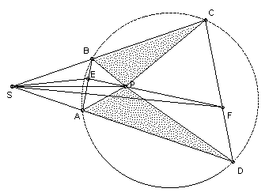

ABCD is a cyclic quadrilateral. E and F are variable points on the sides AB and CD respectively, such that AE/EB = CF/FD. P is a point on the segment EF such that EP/PF = AB/CD. Show that area APD/area BPC does not depend on the positions of E and F.
Solution

We show that area APD/area BPC = AD/BC.
If AD and BC are not parallel, then assume they meet at S. Triangles ASB, CSD are similar. But AE/EB = CF/FD, so triangles ASE and CSF are similar, so ∠DSE = ∠CSF. Also SE/SF = SA/SC = AB/CD = PE/PF, so PS bisects ∠ESF. Hence ∠ASP = ∠ASE - ∠PSE = ∠CSF - ∠PSF = ∠CSP. So PS also bisects ∠ASB. Hence P is equidistant from AD and BC, so area APD/area BPC = AD/BC.
So assume AD and BC are parallel. Then AB = CD (since the points are cyclic) and P is the midpoint of EF. Also AE/EB = CF/FD, so (AB - BE)/BE= (CD - DF)/DF and hence BE = DF. Let L be the perpendicular to AD and BC through P. Then the AB and CD are equally inclined to L and PE and PF are equally inclined to L, so the distance of P from AD = projection of PF onto L + projection of DF onto L = projection of PE onto L + projection of BE onto L = distance of P from BC. Hence area APD/area BPC = AD/BC.

© John Scholes
jscholes@kalva.demon.co.uk
30 Aug 2002